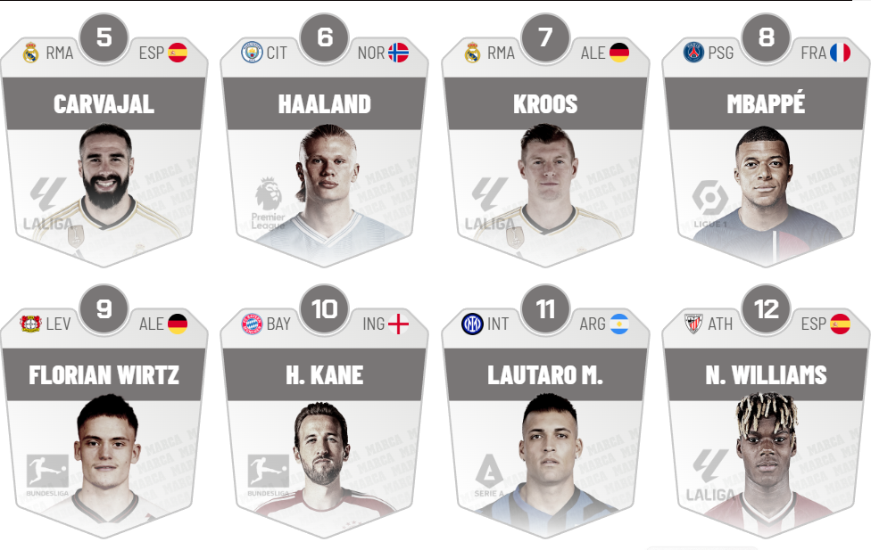

AQUI TE PRESENTAMOS LOS MEJORES JUGADORES DEL MUNDO

Según las valoraciones más recientes del Observatorio de Fútbol del Centro Internacional de Estudios Deportivos (CIES), los cinco futbolistas más destacados en la actualidad son:
Jude Bellingham: Mediocampista inglés del Real Madrid, valorado en 251,4 millones de euros. FORBES.COM.EC
Erling Haaland: Delantero noruego del Manchester City, con una valoración de 221,5 millones de euros. FORBES.COM.EC
Vinícius Júnior: Extremo brasileño del Real Madrid, valorado en 205,7 millones de euros. FORBES.COM.EC
Lamine Yamal: Joven talento español del FC Barcelona, con una valoración de 180,3 millones de euros. FORBES.COM.EC
Kylian Mbappé: Delantero francés del Real Madrid, valorado en 175,2 millones de euros. FORBES.COM.EC
Estas valoraciones reflejan el impacto y la proyección de estos jugadores en el fútbol mundial actual. Ir a proyecto 1